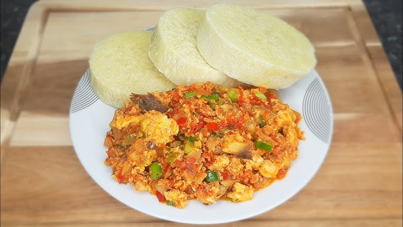

Yam and Scrambled Egg

Nigerian yam and eggs recipe made with succulent boiled yam and fried eggs garnished with vegetables and sardines.
Yam is highly nutritious, filling and contains less starch than potatoes.
Ingredients
- Yam
- Eggs
- Pepper
- Vegetable oil
- Fresh tomatoes
- Onions
- Seasoning cubes
- Salt
Steps
- Slice yam and peel the skin
- Rinse in clean water till water runs clear
- Put yam in a pan, add enough water and salt, cook till soft.
- Break eggs into a shallow bowl, whisk till egg white and yolk are well combined, add salt
- Place a frying pan on medium/low heat, add vegetable oil, heat for about 2-3 minutes.
- Add chopped peppers and onions and cook for 4-5 minutes or till oil floats on the sauce, add salt,seasoning cubes and other ingredients of your choice
- Stir to combine
- Add whisked eggs to sauce and leave for a minute, this will allow the egg to set a bit
- Stir to scramble egg.
- Serve with the boiled yam